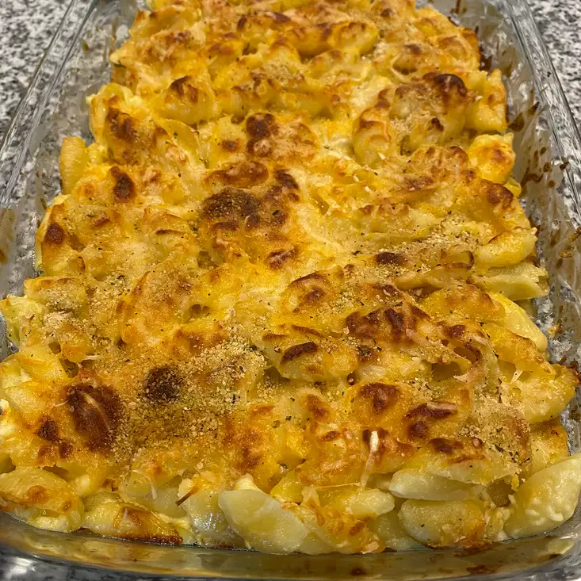

Homemade Mac and Cheese

Description
Have you ever desired your Moms homemade Mac and Cheese recipe, but never had the gumption to get off your lazy ass and make the stuff yourself? Well have no fear my friend! This is capitalism you ungrateful nerd, you don't get high quality super cheesy Mac and Cheese by yourself in this sort of economy. But don't worry. We're going to be as lazy about this as possible. Pull yourself up by the straps and get your boots on your hands, because you're about to have the greatest capitalist Mac and Cheese you ever had in your miserable life, and you didn't even have to go milk a cow for it!
Some terms and conditions apply. Note that Jigidy's website is not responsible for bloating, constipation, lactose intolerance, gluten allergies or other medical conditions you cast aside in the rat race that is the pursuit of happiness. For further assistance, please see a medical professional who can give you the medications you need to eat this meal in exchange for hundreds of dollars that you definitely have.
- 1 (16 ounce) package of elbow macaroni
- 1/2 teaspoon salt
- 3/4 cup butter, softened - divided
- 1 cup sour cream
- 1 tablespoon cream cheese, softened
- 1 (8 ounce) package shredded sharp Cheddar cheese
- 1 egg yolk
- 2 tablespoons all-purpose flour
- ½ teaspoon ground cayenne pepper
- 1 cup milk
- 1 (8 ounce) package shredded mild Cheddar cheese
- First preheat that oven to 375 degrees F. Thats 190 degrees celsius for the rest of the civilized world. DON'T TOUCH IT THATS HOT DUMMY.
- Get some friggin pot and get it to a boil. Throw that elbow macaroni in the boiling water and stir it OCCASIONALLY until its almost cooked DON'T OVERDO IT YOU WANKER. This should take you about 7 minutes. Sprinkle it with the 1/2 teaspoon of salt and 1/2 cup of butter, and then move on with your life.
- Slap that 1/4 cup gob of butter, sour cream, cream cheese, sharp cheddar and egg yolk into a bowl and mix it all together. Then spank it with some flour, 1/2 teaspoon more salt, cayenne pepper and milk until you've got it all messed up together.
- Spread 1/4 cup of the sour cream mix over the bottom of the prepared baking dish, and dump the rest of it into the pasta. Pour it all over the baking dish you prepared, and then sprinkle some more cheese over it. Then take your cat and have it walk across the dish before you get it. This wasn't in the ingredients list, but if you like cat feet in your food like me then this should be easy for you. GET 'ER DONE.
- Bake that shit in the oven for about 15 minutes. or 20. Or 10. You think I care?
There you go, some damn fine mac & cheese. God I hope you're happy with my choices, I sure as shit ain't.